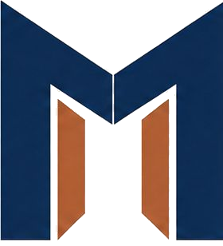
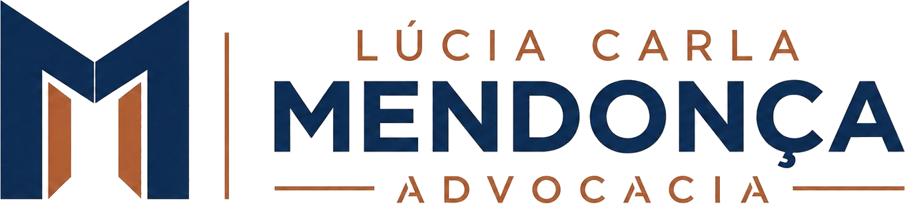

Lúcia Carla Mendonça
A marca profissional e pessoal associada à autoridade, experiência e presença de Lúcia Carla. Combina a solidez institucional à proximidade humana, liderança executiva e assinatura de confiança.
Papel no Ecossistema
Enquanto a Mendonça Advocacia confere o respaldo institucional do grupo, a marca Lúcia Carla Mendonça personifica a liderança técnica, a capacidade de mediação complexa e o relacionamento direto com decisores estratégicos.
Mendonça Advocacia
INSTITUCIONAL
A marca institucional corporativa que ancora contratos vultosos e litígios em tribunais superiores.
Lúcia Carla Mendonça
PROFISSIONAL
O centro da relação de confiança. Atua como porta-voz do grupo, referência jurídica sênior e assinatura de liderança em negociações estratégicas de alto nível.
Clínica Geral da Advocacia
SERVIÇO & ACESSO
Orientação jurídica acessível e ágil para demandas cotidianas de empresas e cidadãos.
DNA Compartilhado com o Ecossistema
A marca preserva a geometria sagrada do monograma M, mas personaliza seus planos internos com o tom cobre/terracota, que imprime calor humano e proximidade.

O Monograma M em Cobre
Na assinatura de Lúcia Carla, as facetas internas que representam as portas abertas do portal assumem a cor cobre/terracota. Esse ajuste cromático diferencia visualmente a atuação pessoal da marca institucional sem romper o pertencimento à família Mendonça.
Identidade Individual & Versões da Assinatura
Extraídos diretamente da Página 06 do PDF oficial. A assinatura profissional destaca a hierarquia entre o nome pessoal e o sobrenome institucional.

01 • Versão Positiva (Principal)
Aplicação prioritária sobre superfícies claras nobres (marfim, creme, papel texturizado). Símbolo com facetas em cobre, nome LÚCIA CARLA em cobre, MENDONÇA em Navy.
02 • Versão Negativa (Alto Contraste)
Aplicação obrigatória sobre superfícies escuras, fotografias contrastadas e apresentações em modo escuro. Totalmente em branco puro com máxima legibilidade.
03 • Versão Monocromática (1 Cor)
Para processos burocráticos, carimbos profissionais, assinaturas digitais monocromáticas e gravações com tinta única.

04 • Versão Reduzida (Símbolo Cobre)
Favicons, fotos de perfil em colunas de opinião, assinaturas de e-mail compactas e selos lacres em tom cobre.
Área de Proteção (Respiro Mínimo)
A área livre periférica deve ter no mínimo a altura da letra L de LÚCIA. Nenhum texto ou elemento estranho pode invadir essa demarcação.
Dimensões Mínimas Recomendadas
Logo Completa: Mínimo 150px de largura.
Símbolo M Cobre isolado: Mínimo 24px × 24px.
Logo Completa: Mínimo 40 mm de largura.
Símbolo isolado: Mínimo 8 mm de altura.
Founder & Spokesperson Image System
Baseado no Slide 06 do PPTX e Página 08 do PDF oficial: a presença da fundadora funciona em dois níveis complementares no ecossistema.
A Marca Ganha um Rosto e Escala
Lúcia Carla é o centro absoluto da relação. O atendimento é consultivo, exclusivo e assinado diretamente por ela.
Atua como fundadora, líder técnica e fiadora ética da solidez da operação, sem concentrar todas as frentes de execução operacional.
O serviço foi estruturado para ser reconhecível e escalável, funcionando com autoridade e metodologia mesmo quando a figura pessoal não está fisicamente presente.
Sistema de Cores: Cobre & Marfim
A paleta exclusiva de Lúcia Carla Mendonça ancora-se no calor nobre do cobre/terracota e na suavidade acolhedora do marfim. Clique no código para copiar.
| Amostra & Nome | Token CSS | HEX | RGB | CMYK (Est.) | Função / Contexto | Contraste |
|---|---|---|---|---|---|---|
|
Copper (Cobre/Terracota)
|
--color-copper |
184, 111, 76 | 18, 58, 72, 12 | Acento principal da marca, autoridade humana, linhas | AA (4.7:1 s/ Ivory) | |
|
Copper Deep
|
--color-copper-deep |
150, 83, 52 | 22, 68, 85, 20 | Texto em destaque, bordas ativas, estados de foco | AAA (7.2:1 s/ Ivory) | |
|
Warm Ivory Sand
|
--color-ivory-sand |
238, 231, 216 | 6, 7, 14, 0 | Fundo do cartão profissional e superfícies táteis | AAA (12.4:1 s/ Navy) | |
|
Ivory Puro
|
--color-ivory |
246, 241, 231 | 3, 4, 8, 0 | Fundo padrão para leitura de artigos e pareceres | AAA (13.8:1 s/ Navy) | |
|
Navy Profundo
|
--color-navy |
11, 31, 58 | 90, 72, 40, 52 | Tipografia institucional, nome MENDONÇA na logo | AAA (14.2:1) |
Sistema Tipográfico Pessoal
Geometria refinada com espaçamento generoso para a assinatura pessoal LÚCIA CARLA.
Composição Editorial & Molduras
As páginas de Lúcia Carla empregam linhas horizontais finas em cobre e molduras delicadas para valorizar retratos e artigos assinados.
Proporção Áurea da Assinatura
A altura da caixa de texto de LÚCIA CARLA corresponde exatamente a 45% da altura de MENDONÇA, conferindo equilíbrio estético e autoridade ao sobrenome familiar.
Eixo rigorosamente simétrico
Espessura de 1px a 1.5px
Respiro mínimo de 64px
Efeitos de Superfície & Foil Cobre
A estética de Lúcia Carla Mendonça destaca-se pelo brilho quente do cobre metálico sobre a textura macia do marfim.
Foil metálico terracota para cartões pessoais de relacionamento e convites executivos.
Gramatura de 300g a 450g com textura táctil sutil e absorção aconchegante.
Efeito sutil de iluminação difusa em botões e cards de citação da fundadora.
Aplicações Físicas & Cartão Pessoal
Baseado no Slide 08 do PPTX e Páginas 09 e 10 do PDF. O cartão de visitas de Lúcia Carla Mendonça adota corpo em Marfim nobre com detalhes e linha em foil cobre.
Cartão de Visitas Pessoal (Marfim & Cobre)
Av. Brigadeiro Faria Lima, 3477 • São Paulo / SP
Especificação: Papel Color Plus Marfim 450g, hot stamping metálico cobre nos detalhes e monograma.
Nota de Relacionamento Executivo
É uma satisfação compartilhar nossas reflexões sobre os desdobramentos estratégicos da recente reorganização estrutural...
Reafirmo nossa disposição pessoal para dialogarmos sobre as melhores rotas de segurança e governança.
Atenciosamente,
Lúcia Carla Mendonça
Aplicações Digitais & Thought Leadership
Artigos assinados, colunas especializadas, canais de relacionamento e palestras com identidade sofisticada e humana.
Autoridade, Estratégia e Visão Humana
Mais de duas décadas orientando conselhos diretivos e lideranças corporativas na resolução de controvérsias complexas.
Componentes de Interface
Componentes estilizados na tonalidade cobre/terracota para botões de destaque, caixas de citação e assinaturas digitais.
Ações & Botões com Acento Cobre
“Nossa missão é construir segurança onde há incerteza, com a firmeza técnica do direito e a clareza humana que as grandes lideranças exigem.”
Lúcia Carla Mendonça Sócia-Fundadora da Mendonça AdvocaciaDiretrizes de Uso: Do & Don't
Regras específicas para a integridade da assinatura pessoal de Lúcia Carla Mendonça.
Grafia com acento no Ú preservada
A palavra LÚCIA obrigatoriamente contém acento agudo no Ú.
Supressão do acento gráfico
Nunca escreva o nome sem acento ("LUCIA"). É um erro grave de identidade e ortografia.
Alinhamento simétrico sobre MENDONÇA
LÚCIA CARLA mantém largura proporcional idêntica ao bloco MENDONÇA.
Desalinhamento de eixos ou proporções
Nunca altere o tracking de LÚCIA CARLA para fora dos limites das extremidades de MENDONÇA.
Tokens CSS Custom Properties
Variáveis semânticas configuradas para a assinatura de Lúcia Carla Mendonça.
:root {
/* Cores Oficiais Lúcia Carla Mendonça (PPTX & PDF) */
--color-copper: #B86F4C; /* Cobre / Terracota Principal */
--color-copper-deep: #965334; /* Cobre Escuro para Contraste */
--color-copper-light: #D69170; /* Cobre Claro para Destaques */
--color-ivory: #F6F1E7; /* Marfim Base */
--color-ivory-sand: #EEE7D8; /* Marfim Cartão e Texturas */
--color-navy: #0B1F3A; /* Navy para Nome MENDONÇA */
--color-navy-dark: #070B12; /* Fundo Noturno */
--color-white: #FFFFFF; /* Branco Puro */
/* Efeitos e Acabamentos */
--grad-copper: linear-gradient(135deg, #B86F4C 0%, #E29F7E 50%, #965334 100%);
--shadow-copper: 0 8px 25px rgba(184, 111, 76, 0.25);
--border-copper: 1px solid rgba(184, 111, 76, 0.3);
/* Tipografia da Assinatura */
--tracking-lucia-carla: 0.18em;
--font-family-display: "Plus Jakarta Sans", sans-serif;
--font-family-serif: "Playfair Display", Georgia, serif;
}Matriz de Decisões & Origem Técnica
Rastreabilidade das decisões da marca Lúcia Carla contra os arquivos de origem.
| Item / Elemento | Fonte PPTX | Fonte PDF | Status | Justificativa Técnica |
|---|---|---|---|---|
| Assinatura Oficial (Positiva & Negativa) | Slide 05 (imagem 3) | Página 06 (vetores) | Aprovado | Extraído com fidelidade alfa a partir da Pág. 06 do PDF oficial. |
| Cor Cobre / Terracota (#B86F4C) | Slide XML srgbClr="B86F4C" |
Páginas 04, 05, 06, 10 | Extraído | Cor oficial exclusiva de Lúcia Carla no ecossistema. |
| Grafia Obrigatória LÚCIA | Slide 01 e 05 | Página 01, 05, 06, 08 | Aprovado | Acento agudo no Ú explicitamente preservado em todos os documentos. |
| Sistema de Imagem da Fundadora | Slide 06 | Página 08 | Aprovado | Papel duplo documentado: liderança pessoal e referência humana do grupo. |
| Cartão Marfim & Cobre | Slide 08 | Páginas 09 e 10 | Aprovado | Especificação física em marfim (#EEE7D8) e acabamento em cobre. |
| Dados de Contato Demonstrativos | Ausente | Ausente | Demonstrativo | Dados fictícios para teste e layout com aviso explícito. |